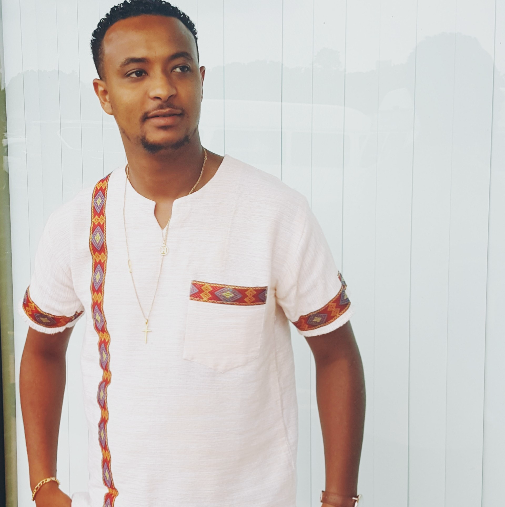

About Me
Hello, my name is kidus ketema I was born in 1995, March 27 in Addis Abeba the capital city of Ethiopia and Africa. I grow up playing soccer and I was the main striker for my elementary and high school team and my favorite soccer team right now is arsenal from England am a big fan of Arsenal. I graduated my first bachelor's degree in logistics and supply chain management in 2016, from hawassa university which is one of the biggest university in Ethiopia and its located in the southern part of Ethiopia and 300 miles from my hometown Addis, after moving to united states with my family in dec,2016 I have been working for a company called A plus in Decatur Atlanta. And the reason am taking this Bootcamp is want to use the skills to change my career and join Georgia state for a masters program in computer filed. And I also want to have my own youtube channel to teach web development in amharic which is the language spoken in Ethiopia.